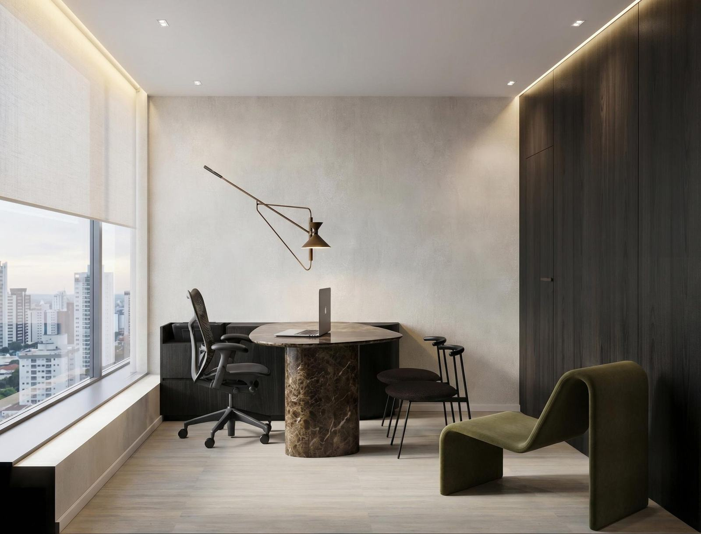

A casa · 01
A chegada
Instituto Rocca · Moema

Instituto de Qualidade de Vida e Bem-Estar · Moema
A gente trata a causa do que parou de funcionar em você — com o mesmo médico do primeiro dia em diante.
Atendimento em Moema, São Paulo
01 — O problema
Dormir oito horas e acordar cansado. A disposição que sumiu. A barriga que não sai, mesmo fazendo o que sempre funcionou para você.
Na maior parte das vezes não é a idade. É metabólico, é hormonal, e é investigável.
02 — O método
A consulta começa pela escuta, passa pelo exame e só então chega à conduta. Nessa ordem, sempre.
Você sai entendendo o próprio resultado, sem jargão, e sabendo por que cada coisa foi pedida — com o médico que vai te acompanhar o tratamento inteiro.

Serviços
03 — O mecanismo
Foi o seu metabolismo. Quando ele desregula, energia, sono, disposição e peso vão junto.
Metabolismo se investiga e se trata. E o que volta é o que sumiu: não uma pessoa nova, a sua melhor versão.


A casa
A casa · 01
Instituto Rocca · Moema
A casa · 02
Instituto Rocca · Moema

A casa · 03
Instituto Rocca · Moema

A casa · 04
Instituto Rocca · Moema

A casa · 05
Instituto Rocca · Moema

A casa · 06
Instituto Rocca · Moema

Os médicos
Aqui você não passa por um médico. Você tem um médico — o mesmo, do primeiro dia em diante.
 Vídeo vertical — "Quem eu sou", estúdio Jacarandá
Vídeo vertical — "Quem eu sou", estúdio Jacarandá
 Vídeo vertical — "Quem eu sou", estúdio Jacarandá
Vídeo vertical — "Quem eu sou", estúdio Jacarandá
 Vídeo vertical — "Quem eu sou", estúdio Jacarandá
Vídeo vertical — "Quem eu sou", estúdio Jacarandá
Conteúdo
Com nome e rosto. Gravadas no estúdio Jacarandá, transcritas no site.
Contato
A gente responde em até um dia útil.
Quem responde é o Instituto. Você conta o que parou de funcionar e a avaliação é marcada na conversa, em até um dia útil.